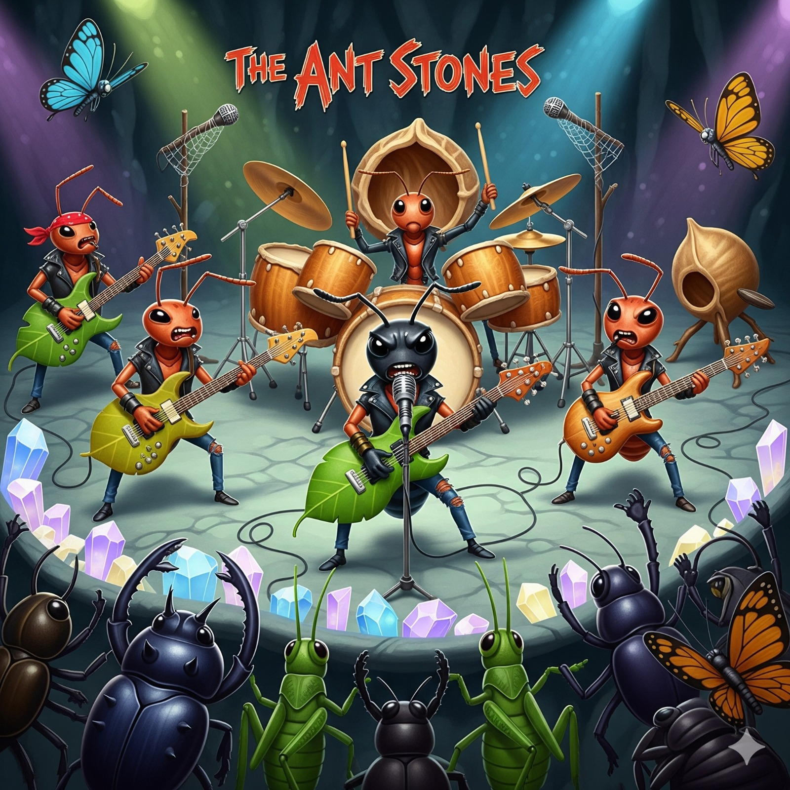

🎶 Formigas criam banda de rock subterrânea
No Multiverso 44-R, o silêncio dos túneis foi rompido por guitarras elétricas feitas de folhas secas e tambores construídos com cascas de nozes. Um grupo de jovens formigas fundou a primeira banda de rock do subsolo, chamada “The Ant Stones”.
O sucesso foi instantâneo. Seu primeiro single, “Highway to Formigueiro”, virou hino de protesto contra as cigarras, acusadas de monopolizar os sons da floresta. “As cigarras só sabem cantar o mesmo tom o verão inteiro. Nós trouxemos atitude, solos de guitarra e muito barulho subterrâneo!”, disse o vocalista Formiga Black, sacudindo suas antenas no ritmo da música. O público, formado por besouros, gafanhotos e até algumas borboletas rebeldes, já considera o grupo uma lenda viva. Há rumores de que até humanos ouviram o som ecoar pelo chão.
